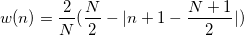
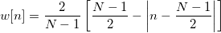
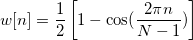
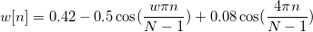
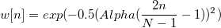
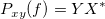
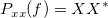
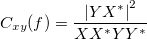

- 矩形ウィンドウ
![w[n] = \begin{cases} 1, & \mbox{if }0 \leq n \leq N-1 \ 0, & \mbox{otherwise } \end{cases}](../images/Algorithm_(Cohere)/math-1dff02816a08f5abee4db570718fae2e.png "w[n] = \begin{cases} 1, & \mbox{if }0 \leq n \leq N-1 \ 0, & \mbox{otherwise } \end{cases}")
- Welchウィンドウ
![w[n]=1-\left[ \frac{n-\frac 12(N-1)}{\frac 12(N+1)}\right] ^2\,\!](../images/Algorithm_(Cohere)/math-6e73eab9df4bcc92805e0be4ccc831c1.png "w[n]=1-\left[ \frac{n-\frac 12(N-1)}{\frac 12(N+1)}\right] ^2\,\!")
- Triangularウィンドウ：
- 奇数:
/math-0301923ac9ba030df614e6d597b61aca.png "w(n)=\frac 2{N+1}(\frac {N+1}2-|n+1-\frac {N+1}2|)")
- 偶数: 
- Bartlettウィンドウ
- 
- Hannウィンドウ：
- 
- Hamming ウィンドウ:
![w[n]=0.54-0.46\cos (\frac{2\pi n}{N-1}) \,\!](../images/Algorithm_(Cohere)/math-b6803ad49e62341c7d027fda8b337cb8.png "w[n]=0.54-0.46\cos (\frac{2\pi n}{N-1}) \,\!")
- Blackmanウィンドウ
- 
- Gaussianウィンドウ
- 
- AlphaはAlphaパラメータで指定されます。
- Kaiserウィンドウ
![w[n]=I(beta*\sqrt{1-(\frac{2n}{N-1}-1)^2}) / I(beta) \,\!](../images/Algorithm_(Cohere)/math-04b7bbeb549a0b1d5ee22e3d50305676.png "w[n]=I(beta*\sqrt{1-(\frac{2n}{N-1}-1)^2}) / I(beta) \,\!")
- I(ix)はBessel関数を示し、betaはBetaパラメータで指定されます。
パワースペクトル密度は相関のフーリエ変換です。離散相関定理から、2つの信号の相関のフーリエ変換が1つの信号のフーリエ変換ともう一方の信号の共役フーリエ変換の積に等しいことが分かっています。したがって、パワースペクトルの密度はフーリエ変換で計算できます。そして、2つの信号xとyのクロスパワー密度は次式で計算できます。

ここで、XおよびYは、それぞれxとyのフーリエ変換で、* は、複素共役を表しています。
同様に自動パワー密度は次式で計算できます。

したがって、コヒーレンスの計算は次のように書き直すことができます。

入力信号xとyは、重なり合うセクションに分割されます。各セクションのコヒーレンスは、上記の数式を使って計算されます。
サンプリング間隔の自動計算
サンプル間隔で<自動>を選択すると、計算に必要なサンプル間隔が自動で計算されます。
自動的に計算されるサンプリング間隔は、時間データの増加の平均で、これは通常入力信号と結びついているXデータが使われます。結びついているX列が無ければ、行番号が使われます。Originが増加の平均を取得するのに失敗した場合、サンプリング間隔は1にセットされます。
ウィンドウ法
FFTで使用されるウィンドウ法を指定します。デフォルトのオプションはHanningです。